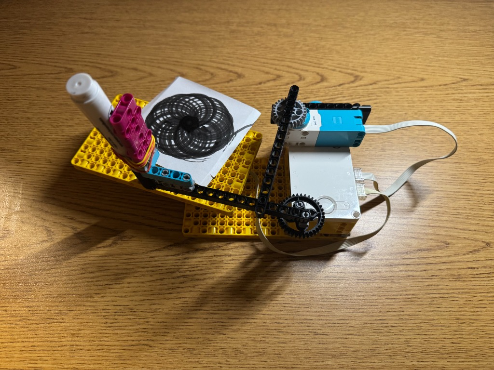
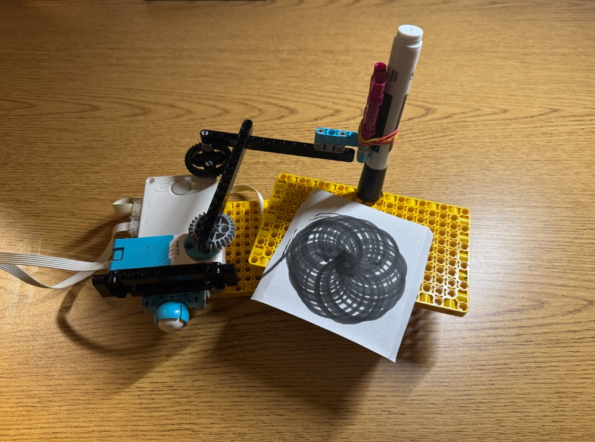

Project Portfolio
Project 5: Spirograph Drawing Machine
This project combined creative thinking with mathematical reasoning to draw a spirograph while working within the spatial constraints of the robot parts and paper size. I found that the pattern drew best when both the platform and the marker were spinning.
Changing the angle of the robot arm affected the resulting pattern. It was a fun way to see how different angles and motions could change the drawing.
See below for a video of my spirograph drawing machine in action.


